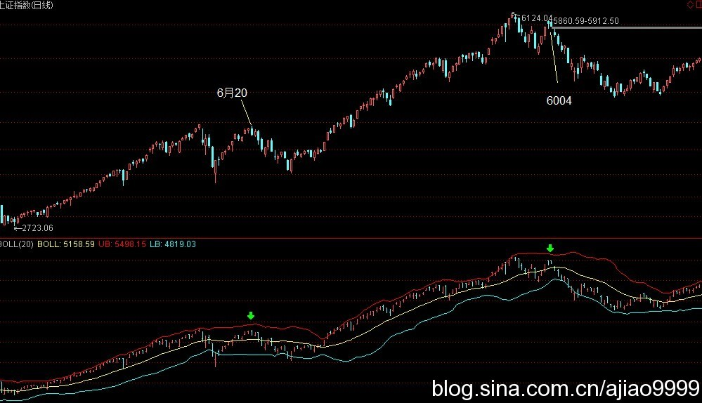
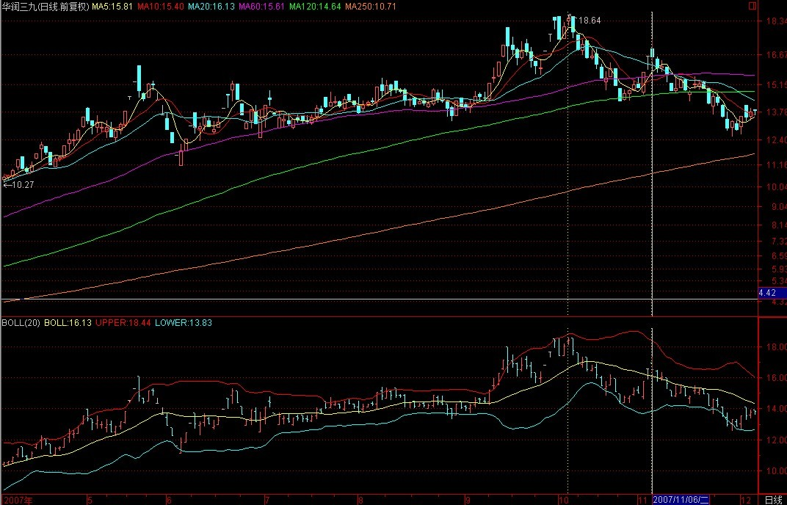
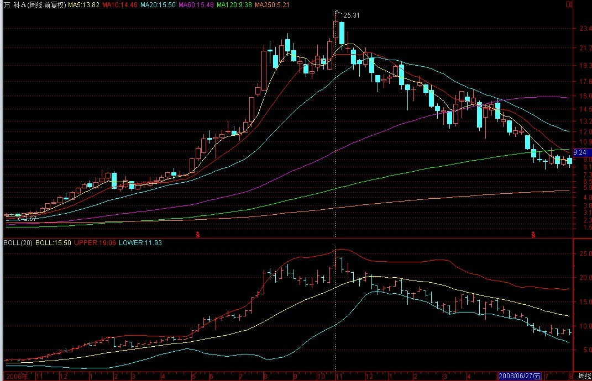
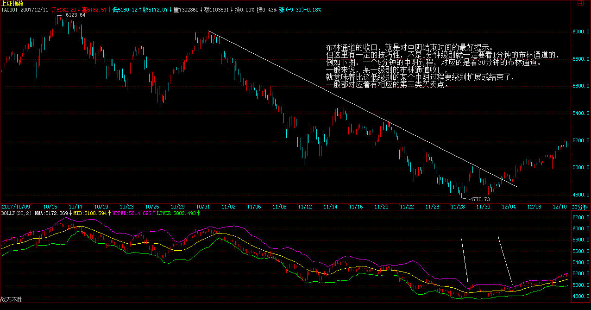
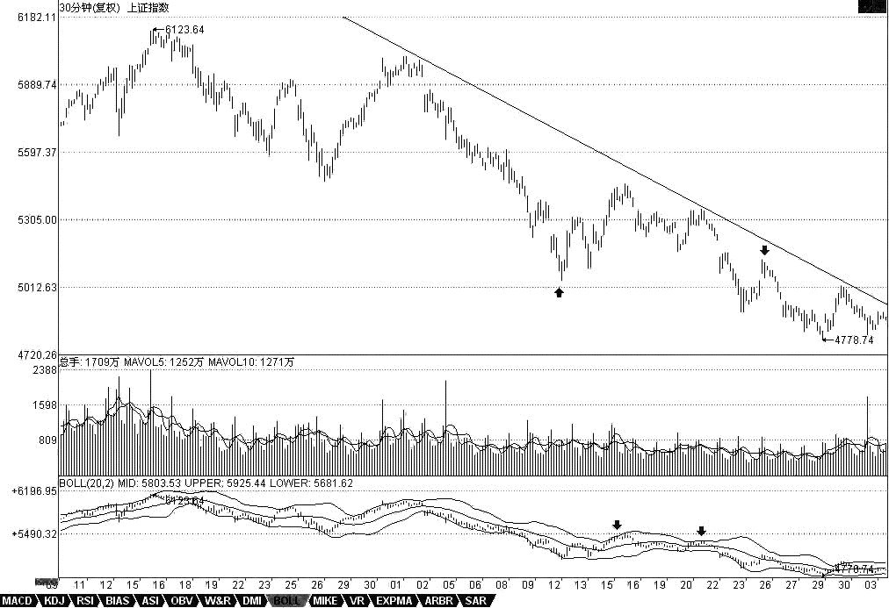
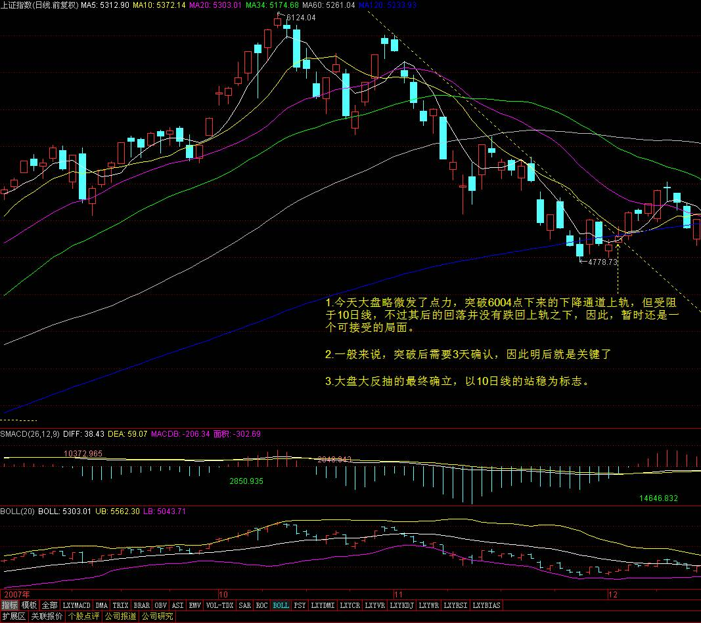
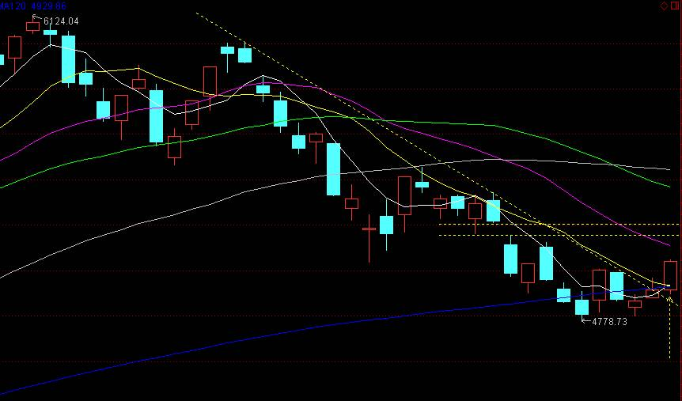
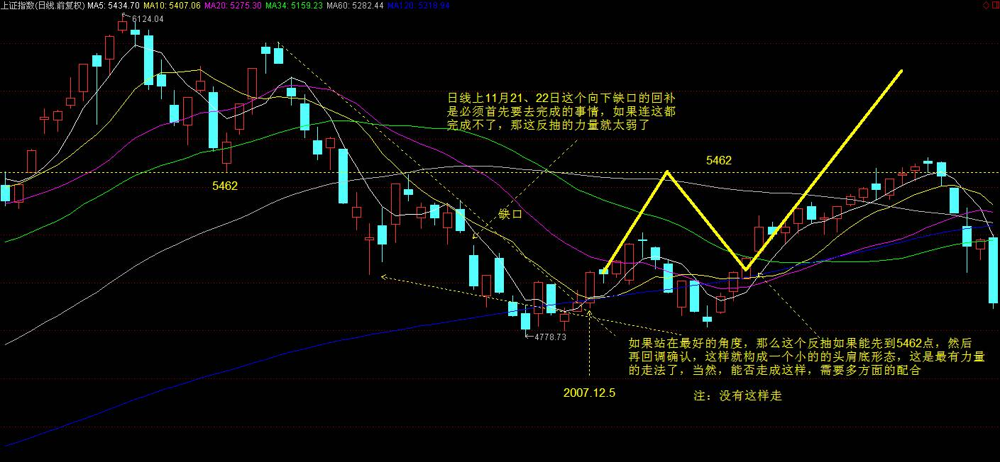
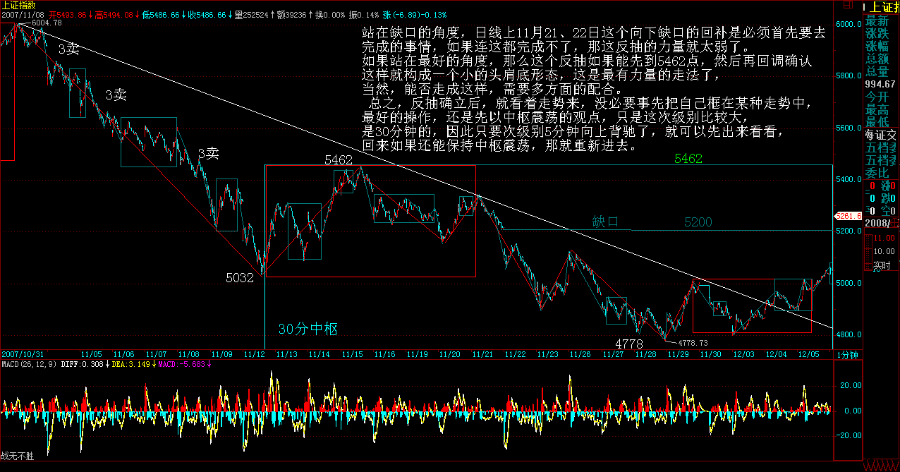

|
 |
教你炒股票90：中阴阶段结束时间的辅助判断
(2007-12-03 22:33:08)
注意，这里给出的是中阴阶段结束时间的辅助判断，并不是一个绝对性的判断，如同用MACD判断背驰一样，只是一个辅助性，但由于准确率极高，绝对的判断反而因为太复杂而不实用，所以就可以一般性地利用这进行判断。一般来说，这个中阴阶段结束时间的辅助判断的有效性可以达到接近100%，很少有例外。
当然，由于是辅助性判断，所以技巧性与熟练程度就很关键了。这就如同玩杂技，训练有素的上台出错的几率很小，而一个训练都没有的一上台肯定出错。
这个辅助判断，可以利用所有软件都有的一个指标：布林通道。一般在软件上都用BOLL表示。该指标一般都三条线，上、中、下三个轨道。一般性地，在上轨以上和下轨以下运行是超强状态，一般中枢移动时肯定会出现，唯一区别是前者是上涨超强，后者是下跌超强。
注意，用这个指标有一个很好的辅助判断第二类买卖点，有时候也可以用来判断第一类买卖点。一般来说，从上轨上跌回其下或从下轨下涨回其上，都是从超强区域转向一般性区域，这时候，如果再次的上涨或回跌创出新高或新低但不能重新有效回到超强区域，那么就意味着进入中阴状态了，也就是第一类买卖点出现了。
但更有效的是对第二买卖点的辅助判断，一般来说，在进入中阴状态，上轨和下轨都会滞后反应，也就是等第一次回跌或回升后再次向上或下跌时，上轨和下轨才会转向，而这时候转向的上轨和下轨，往往成为最大的阻力和支持，使得第二类买卖点在其下或其上被构造出来。一个例子，就是上海大盘在6004点时构成的第二类卖点，还有一个例子就是6月20日那天的第二类买卖点。

个股方面，000938是一个经典的例子，9月14日的第一类卖点，10月8日的第二类卖点，太教科书了。
000999的10月10日的第一类卖点以及11月6日的第二类卖点，也同样教科书。这些例子太多，而且在不同的级别中都一样有效。

注意，有人可能说本ID上面那两个例子都是自己的股票，那肯定对。其实，别的股票更准确，例如000002，这股票够大众情人了，请看他的周线，40.78元那周，看看究竟发生了什么事竟然构成了周线的第一卖点？

不过，布林通道最有用的，还是关于中阴结束时间的预判上。一般来说，布林通道的收口，就是对中阴结束时间的最好提示。但这里有一定的技巧性，不是1分钟级别就一定要看1分钟的布林通道的，例如下图，一个5分钟的中阴过程，对应的是看30分钟的布林通道。
一般来说，某一级别的布林通道收口，就意味着比这低级别的某个中阴过程要级别扩展或结束了，一般都对应着有相应的第三类买卖点。

下图这个例子请好好研究一下，里面还有下午说的那条下降通道，可以看到，现在离这个上轨有多接近。
注意，这个辅助判断，比MACD那个技巧性还要高点，必须不断看图，自己去总结自己的经验才会有所得。本ID这里只是把月亮指给各位，要把月亮变成自己的，还需要自己去努力。

缠师当年操作的几只股票
反弹剧本第一目标胜利完成 (注：补5200点缺口）(2007-12-11 15:33:37)
这几天，把本ID曾说过的股票都再分别说一次。注意，本ID说的股票，都是长线角度说的，你要充分理解本ID的理论才能发挥最大的效力。由于本ID现在比较乖，都是组合形式地操作，不会干在一只股票上买个90%筹码之类的活动，所以组合的股票比较多，一般的散户，可以按照股票池的观点来看，没必要在一棵树上吊死，如果能选择好轮动的节奏，那效果是最好的。当然，没这本事的，宁愿来是吊死在000999、600737之类的股票上算了。
600737，当然不会是单纯的农业股，属于什么牛板块，现在还不能说，说了会出毛病，以后就知道了，知道就会明白，8元的600737，简直比冬藏大白菜还便宜。
000999，以后可能牛得不得了，现在，没办法，谁让股改都没完成？就算不相信本ID，也应该相信曾搞掂万科的公司。
600195：垄断性公司，以后的牛闻不断，不过里面无聊人不少，否则怎么会只有现在的价格。
600779：现在的价格绝对是一个悲剧，怪就怪某些人拿得太多。
000915：创出6100点以来新高的股票不多，为什么他是？本ID在这里说的时候，只有3元多点，以后如果能翻10倍以上，并不是太奇怪的事情。
600635：本ID是在除权前的5元说的，等于现在的3元多，这股票当然是要10倍以上的，就一个PE概念已经足够。
000938：这股票当然不只PE一个概念，而且总体涨幅不大，以后会报仇的。在中国，连清华都不相信，你还能相信谁？
000822：该说的很多，但很多都不方便说，说了要出毛病。唯一可以说的，第一次到18元，该拿货的人都没拿着，大盘6100点的大跌，真是缘分哟、谢谢啊。
第一目标达到后的例行休整(2007-12-12 15:33:01)
注意，昨天说把原来说过的股票再点评，并不是推荐你现在去买。买与不买，图形会告诉你，本ID只是从长线的角度点评这些股票的基本面情况。由于很多股票都是N个月前推荐的，绝大多数涨幅都很大，所以如果不是一路游戏上来而且胆子比较小容易受刺激的，就观看算了。
600343：也快创历史新高了，军工、整体上市，诸如此类的概念。
600078：这股票关键是地底下的玩意，一个寻宝游戏，首先来回折腾，等地底的宝藏给承认了，才会有大行情。
600777：开始是里面人太多，后面是和上市公司没协调好，不过问题总会解决的，解决了，自然就好起来了。不过一路打架上来，也涨了N倍了。
600649：5元的时候说，现在N个月后，也翻了几倍了。一直在高位之上站着，就一个水资源概念就足以站住了。唯一的风险是，万一大盘反弹后，有补跌的压力，但站在长线看，根本不算什么。
000802：光这个名字就足以让这股票在2008年风光了，这有什么可怀疑的？
600578：环保、整体上市、奥运等等概念，虽然说以后涨了N倍了，不过2008年应该不会差的。
601111：说的时候3元不到，然后李军人李军人地说到今天。2008，你说如果连李军人都没戏的话，那还怎么2008？
000777：说的时候是8元，如果这个故事都能展开，80并不是太过分吧。长线看，如果整体上来，中船可以300，那么这中核两个字，是不是要值800？
顶分型确立显威力(2007-12-14 00:49:00)
个股上继续说原来说过的个股。注意，已经反复强调，说这些股票并不是让各位现在还去买，因为买与不买关键是看有没有买点，有多大级别的买点，没有买点去买，那是有毛病。本ID点评这些股票，只是从长线的角度说，别糊涂了。
600139：这股票叫等比，当时的闹剧估计很多人还记得。你可以叫它妖股，但妖总有妖的理由，关键你是否好的猎手。这世界上，很难找到9元多快速上涨到24又快速跌到12的股票了，这才是最好的股票，为什么？震荡够大，差价够狠。没这技术的，请远离。
600569：这也是一只折腾不少人的股票，最大的题材，还是整体上市与收购，股性比较顽皮，没技术的远离。
000998：农业股的问题就是概念好，但业绩跟不上，所以暂时只能大箱型折腾，等待大的业绩、题材突破机会，站在长线角度，总要牛起来的。
000416：这是一个典型的兴奋过度例子，说的时候3元，不到5个月飞奔到了18元，然后就是痛苦的调整，短线关键是业绩关，长线总是要反复被折腾的，为什么？股性在那里，里面折腾的人的个性在那里，当然，大突破需要等待一个时机。
000778：看看股东背景，就知道这股票天生就是要被折腾的。涨了4倍，休息一下也是应该的，中线大箱型整理，等待突破契机。
000099：和000778一样，一个特殊的大股东，一个特殊的行业，总要被折腾的，中线也是大箱型整理，等到突破契机。
600432：从20元不到冲到132，时间也就九个月，休整一下很应该，中长线当然没问题，有色的世界行情只要不倒，这是不用讨论的。
600234：本ID喜欢股票代码好玩的股票，有了600432，当然需要600234，而且一个等差数列，与前面的等比也要有一比。ST的股票，没技术的人别乱碰，这里玩的就是基本面的大改变，这里有不确定因素，因此才有大的投机价值。
周底分型构成待确立(2007-12-14 15:48:40)
周末，不想说太多股票，把以前说过的股票最后几只都说说。
600594：去年底，本ID说看好医药和钢铁，后来医药股里出了不少黑马，这股票不算黑马，涨幅也一般，还需要努力。
600607：本ID叫这是汉奸股，要吸其血。后来24元上说走人，但中线还要折腾。
600375：这股票震荡也不小，主要问题是公司治理有问题，如果这问题解决，这股票不会比三一差，现在只能耐心等待问题的解决。
600319：这和上面的问题一样，有投机性题材，机会一到，自然爆发。中线暂时箱型震荡。
600636：现在盘子稍微比前几个月干净了点，题材业绩概念都不错，就是盘子太脏，慢慢洗白白，洗干净自然就表现了。
000600：涨了4倍后休息一下，整体上市之类的题材，中长线没问题。
000021：好股票总要表现的，不过科技股不是现在的主流，但70元的历史高位，对于长线角度，并不是特了不起的位置。
000338：中国一个大行业的控制性企业，光这点就决定了其长线的价值。
002149：上市时短炒了几天，然后先走了。后来在答疑的时候描述过这类股票的中长线建仓手法，现在的走势基本按这剧本，当时说最好能到10几，估计有点难度，如果真有这些价位，那肯定是无敌风火轮了。砸的狠，往往是爱之深，想吃到中长线的便宜筹码，如此而已。公司基本面很好，最不好就是中长线的筹码很难买够。
000807：并购题材，这种题材的变数比较大，不过这股票的有色背景，使得业绩是有保障的，可以算是有业绩支持的投机。
中字头：中驴、中国人兽，中石头，中联通等等，这都是本ID两个翅膀中的一个。中联通一旦中移动回来，疯一次是很应该的。另外，整体业务的上市、整个电讯重组，都是很大的题材。其他几只，都是长线的好股票，只是中线上，前面发力过大，如果没有股指期货刺激一下，不会太过疯狂。
90课（回复）
突破回抽，明后是关键
(2007-12-04 15:29:26) 一般来说，突破后需要3天确认，因此明后就是关键了。

长阳突破10日线，大反抽确立
(2007-12-05
15:20:16)
本来今天该用红字的，但为了让各位冷静点，还是用绿字比较好。毕竟，这本ID反复强调马上要来的大反抽后还至少有一个探底确认的过程，所以冷静是必须的。
明天，关键是5010点，这是这次小双底的颈线位置，只要这位置站住，那么就有攻击双底基本升幅的潜力。
站在缺口的角度，日线上11月21、22日这个向下缺口的回补是必须首先要去完成的事情，如果连这都完成不了，那这反抽的力量就太弱了。


总之，反抽确立后，就看着走势来，没必要事先把自己框在某种走势中，最好的操作，还是先以中枢震荡的观点，只是这次级别比较大，是30分钟的，因此只要次级别5分钟向上背驰了，就可以先出来看看，回来如果还能保持中枢震荡，那就重新进去。（当然，你手脚特麻利的，也可以看1分钟的。）

当然，看不明白的，就看5日线，只要5日线不破，那么大盘就继续保持反抽的潜力。
要去那恶心的太监村一趟，忒堵车，必须马上走了，先下，再见。
5010点的回抽确认(小双底的颈线位置)
(2007-12-06
15:17:59)
今天按昨天所说的，全天就是对5010点的回抽确认。其实，如果心思缜密的，就知道，今天下午突然下破5010点的走势，就是一个典型的小空头陷阱。
这里顺便上上课，前面说过，明白陷阱，你的技术水平就会高多了。什么是陷阱？陷阱必须由中枢而来，所谓陷阱，归根结底都是中枢震荡的结果。如果不是中枢震荡，而是中枢移动，那就不可能是陷阱，而是真陷进去了。
陷阱与非陷阱最关键的区别，除了是否中枢震荡外，就是力度上的前后比较问题了，这需要好好去研究，真研究明白，变成自己的直观，那才真有用的。
5010点站稳，行情继续展开（小双底的颈线位置）
(2007-12-07
15:17:09)
个股方面，没什么可说的，现在基本是普涨状态，因为很多前面做空的，都陆续有点回补，所以就比较平均。关键是突上去以后，就需要领涨板块了。所以普涨后是否形成领涨板块的市场共识，决定了行情最终的高度。
不说了，周末，出去腐败吧。
本ID要去山里泡泡温泉，可惜北京一直没有雪，真怀念在雪地里泡温泉数星星的日子呀。
先下，再见。
今天不是530
(2007-12-10
15:29:40)
不过，本ID这里还是要继续绿的，这是继续让各位冷静，别一见红的就太兴奋，那就要变成西班牙那被杀的牛了。
走势，没什么可说的，周五已经说了，如果连日线的第一个顶分型都没出现，那就别整天一惊一乍的，所以本ID这样要继续绿色，就是让各位节省点能量，环保点。最节省能量的办法是什么？就是买点介入后，一直持有等待卖点。而日线笔的成立意味着，如果盘中那些一惊一乍的活动不足以制造顶分型，那就继续睡觉，等出现日顶分型再起来看看是否能有效跌破5日线确立。
当然，如果你手脚特麻利，就利用1分钟的走势去换股或打差价操作，不过反弹的第一轮是普涨为主，因此换股操作难度要大点。
后面的任务就是前面已经说过的第一目标，把缺口给补了，今天补了一小部分。完成第一任务，再站稳，然后再看第二任务，饭要一口口吃，人要一拨拨骗，这就是反弹的要点。
本ID这一年以来说了不少股票，但唯一两只是声明是给各位赚学费的。一只是6元时候的000999，那是去年12月的事情。第二只就是今年下半年的600737，当时价格是8元。现在，000999且不说了，600737现在有谁还能从8元一直拿到现在？
提一个思考题，2008年，本ID继续看好的是有色、钢铁、奥运、环保、农业、中字头、整体上市、军工等等的股票，你说者600737属于哪一类呢？
让梦想继续照进现实，面包会有的。
先下，再见。
反弹剧本第一目标胜利完成
(2007-12-11
15:33:37)
前面4800点说要反弹时，给了一个剧本，第一目标就是回补5200点这个缺口，今天总算胜利完成了。下一个目标是什么（5462），前面可也说了，如果不知道，那是看帖子不认真，本ID可没有义务重复说。
今天完成补缺任务后展开震荡，一个完美的1分钟中枢也就此构成，尾盘在1分钟中枢的第三分线段结束后重新拉回5151点之上，就确认了这个震荡中枢的有效性。后面，5151点是一个关键位置，只要能围绕着震荡，就不会有大问题。
现在的操作，十分简单，大的可以继续看日线上的笔是否结束来决定卖出。手脚麻利的，可以利用这个震荡进行换股或打短差。没感觉的，就继续看5日线。 第一目标达到后的例行休整
(2007-12-12 15:33:01)
昨天达到反弹的第一目标后，今天出现例行的休整，本就是天经地义的事情，和外围以及基本面因素都关系不大。 由于大盘采取了弱势休整，用本ID的理论语言，就是休整将和前面5010点那次1分钟级别的中枢震荡一起扩展成了5分钟级别的，因此，震荡的区间就自然从这个大的震荡着眼。
日线上，因为今天顶分型形成，但5日线并没有确认有效跌破，因此，并不能马上断言这个休整必然在日线上留下向下的笔，所以明后两天的5日线是关键，一旦有效跌破，那么休整将至少形成向下的笔，也就是至少要等到底分型出现才会结束。
如果你的股票已经出现周底分型的确认，那么就以5周均线为参照持有就可以，不必太注意大盘的震荡。当然，如果你手脚特麻利，那就可以来回短跑，一般人就算了。
顶分型确立显威力
(2007-12-14 00:49:00)
昨天早上反抽不上5日线，顶分型确立。当然，顶分型确立，并不一定要拉出长阴线，但更不一定不拉出长阴线，10条短阴线与一条长阴线，只要不出现底分型，最终都只是指向一个向下笔的过程。而站在本ID理论的角度，只关心买卖点的结果，并不关心过程。 一个顶分型跌破5日线，就是未病-欲病-已病模式中的最后一个已病了，既然已病了，就只能等大盘病好，病好的日线标志就是底分型。站在中枢震荡的角度，昨天说了，5010点那次的中枢震荡扩展成一个大的5分钟中枢震荡，今天的下跌，暂时没有把这个中枢震荡的第三类卖点给震出来，所以，只要不出现这个卖点，那么一切依然保持在基本的中枢震荡中，当然，如果出现了，那么大盘跌破上次低点的几率就极大了。 站在中枢震荡的角度，第三类卖点是典型的已病了。第一等的高手，是未病就下手了，第二等的高手是欲病就下手，等到已病，那确实有点不太高明了。 当然，对于这样的反弹，如果操作不过来的、心态跟不上的、手不够狠的，最安全的无疑还是正确光荣伟大的小板凳，有时候，休息几个月并不是什么坏事，这点是反复强调的了。 不过，站在周线的角度，暂时还没有破坏可能形成的周的底分型，而下周5周均线将继续下移，一旦站住，大盘仍将继续反弹。所以，今天的走势很关键，今天只要不跌破4778点，周线上至少还不太坏。上周五已经说了，本周的任务是构造周线的底分型，能否成立，就看今天了。
周底分型构成待确立
(2007-12-14
15:48:40)
上周给了本周一个任务，就是去构成周底分型，今天早上也特别强调这一点，现在任务算是完成了。下周的任务也先给出，就是去确认周底分型的确立，技术上十分简单，就是5周均线站住。 注意，只要这震荡不出现第三类买卖点，那么震荡继续。有技术的按照震荡的程式进行就可以，那程式是什么？课程里反复说过了。
周一，从日线上看是能否形成底分型，如果成立，然后周二以后是对这底分型的确立，也就是能否站住5日线的问题。一旦确立，这向下笔就完成了。然后就看后面的向上笔能否带领出周线的向上笔了。当然，所有的前提都是周一能够构成日的底分型。
本ID对没学会的人，已经很给面子了，600737让那些没学会的一棵树吊死，如果都办不到，那本ID也没办法，自己磨练去吧。不经历点痛苦，怎么能学到好东西？
本ID这里是一个训练场所，本ID更象一个教练，本ID这里其实没什么，密在汝边。
周五，累了一周，本ID也要去腐败腐败了。
先下，再见。
抛弃指数，冰火两重天。
(2007-12-17
15:30:15)
今天，并没有构成日的底分型，只是制造了一个典型的包含关系。由于离周五低位很近，所以只要明天比周五低，那么就意味着5209点开始的下跌笔依然要延续。
其实，根本无须等到收盘才知道底分型不能构成，因为要构成底分型，首要，是要比周五的最高位置还要高，而大盘开盘就低开，因此，只要大盘不红盘，怎么折腾都可以去睡觉，而底分型都不能构成，当然也是一个睡觉的局面。
|
|
|
|